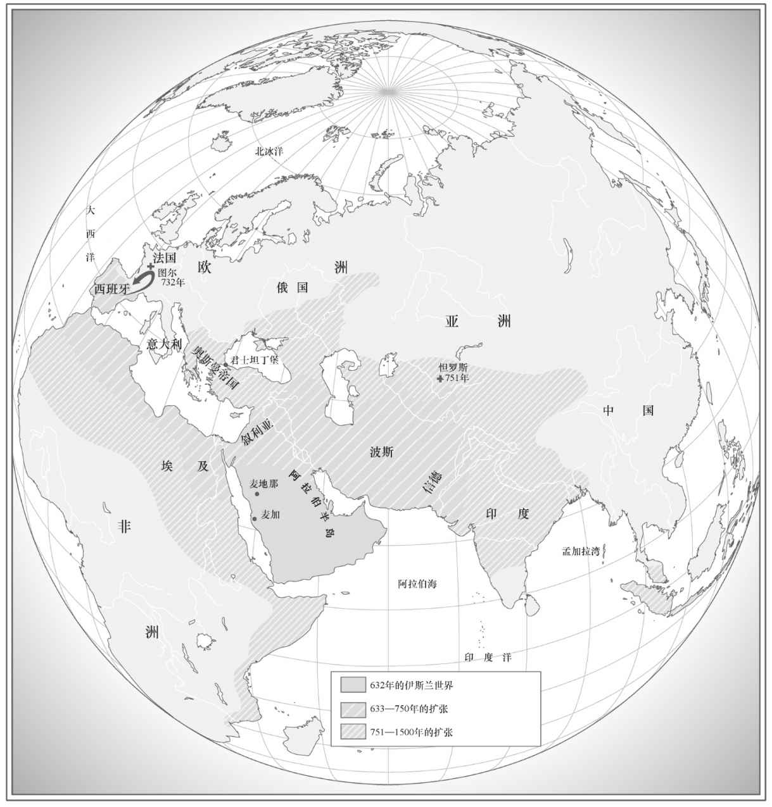
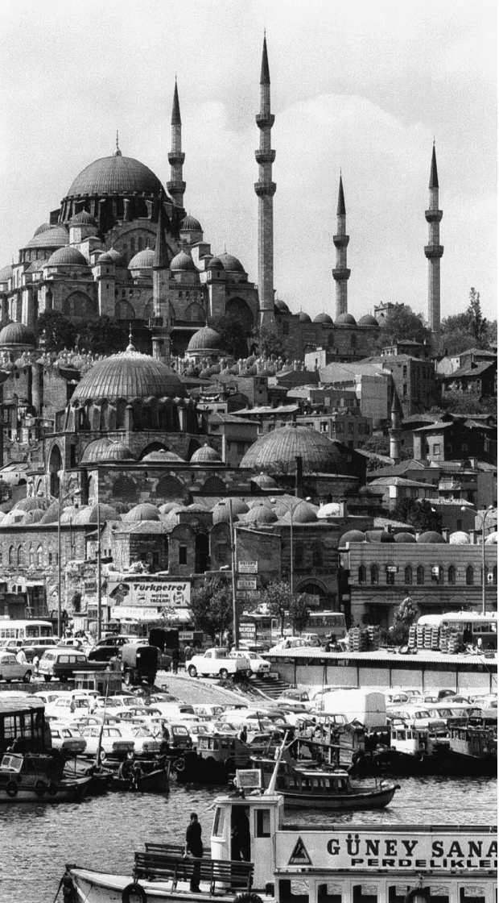
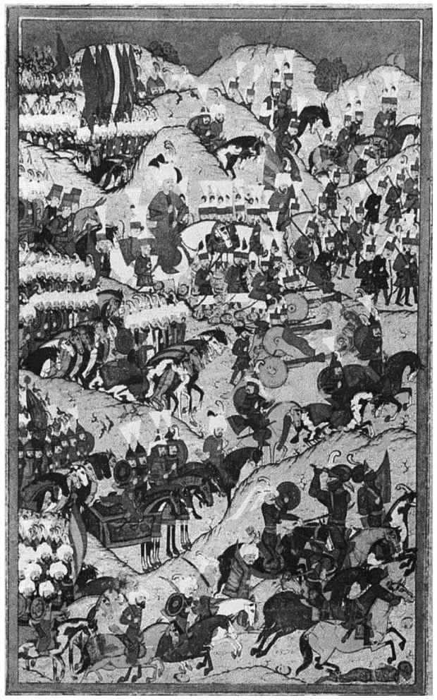
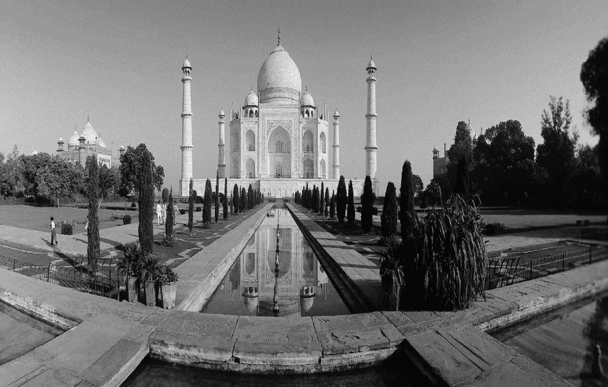

如果1500年一位观察者在月球上观看地球，他对伊斯兰世界的印象一定会比对基督教世界的印象深刻得多。这位神话中的观察者首先会对伊斯兰世界的辽阔版图，然后会对它不断进行的扩张印象深刻。最早的穆斯林是阿拉伯半岛上在宗教领袖穆罕默德领导下第一次团结起来的阿拉伯人。穆罕默德认为，他已接受了神的感召，去警告人们“末日审判”终将来临，去告诫他们忠实的报答是上天堂，邪恶的惩罚是下地狱。他要求信徒们履行一定的仪式，即伊斯兰教的“五功”（包括每日祈祷、施舍、斋戒和去麦加朝圣等）。这些仪式和《古兰经》的规训合在一起，不但提供了一种宗教信仰，而且提供了一种社会法规和政治体系。信徒们感到他们彼此都是有共同使命的兄弟，这有助于团结当时还很涣散的诸阿拉伯民族。
公元632年穆罕默德去世后，阿拉伯人冲出了阿拉伯半岛，并迅速扩张到中东的拜占庭帝国和萨珊王朝。然后他们向东扩张到中亚，向西方穿过北非，进入西班牙。到750年穆斯林扩张第一阶段结束时，世界上已出现了一个从比利牛斯山脉到印度西部、从摩洛哥到中亚庞大的伊斯兰帝国（见地图19）。750年至1500年间，穆斯林又进行了第二阶段的扩张。在这一时期，他们向西进入中欧，向北穿入中亚，向东突入印度东部和东南亚，向南深入非洲腹地；因此，伊斯兰世界扩大了一倍，其面积远远超过欧亚大陆西端的基督教世界和东端的儒家世界。

地图19 1500年前伊斯兰教的扩张
不仅1500年左右，伊斯兰世界是占地最为广阔的，而且那一时期以后，它还继续大力向外扩张。那一时期里，向外扩展疆域的并非如通常所以为的那样，只有西欧。在基督教世界抵达海外的同时，伊斯兰世界也正在陆上进行扩张。16世纪初期，葡萄牙人在印度和东印度群岛获取立足点，西班牙人在美洲大陆征服一个帝国。不过当时，奥斯曼土耳其人——一个初居中亚并皈依了伊斯兰教的民族——也正在闯入中欧。他们侵占了匈牙利，并于1529年围攻位于欧洲中心地带的哈布斯堡帝国的首都维也纳。同样在印度，莫卧儿帝国杰出的皇帝也正在稳步地向南扩展自己的帝国，直到他们成为几乎整个半岛的主人。在其他地方，穆斯林的信仰继续在非洲、中亚和东南亚传播。
伊斯兰教的不断扩张，在某种程度上，是由于它有力地改变了非穆斯林的信仰，不过，穆斯林并不像基督教徒那样惯于使用强制的手段——与这些措施相比，穆斯林商人和传道士温和的传教说教要有效得多；他们在文明程度较低的民族中尤为成功。通常是，商人先露面，他把劝人改宗和推销商品结合起来。商人的职业使他与所要劝服的人们建立起经常而密切的联系。此外，这里没有种族歧视，因为即使商人与村民们不属于同一种族，他多半还是会娶土著女子为妻。这种通婚常常导致该女子的家庭成员接受伊斯兰教。很快，孩子们也需要有宗教教育，于是学校建立起来，不仅穆斯林的孩子常去上学，异教徒的孩子也一样。他们学习《古兰经》和伊斯兰教的教义及礼仪。这就说明了为什么伊斯兰教自它创立之时起，在争取皈依者方面比其他任何宗教都远为成功。即使在今天，伊斯兰教在非洲与基督教的斗争中也不仅仅是占据特有的优势，因为它不仅极好地适应了非洲的各种土著文化，而且还十分顺应当地普遍存在的对外来白种主人的基督教身份认同感。
除了不断扩展疆域外，1500年前后的伊斯兰世界还以它的三大帝国——地跨中东、北非和巴尔干半岛的奥斯曼帝国，波斯的萨非帝国和印度的莫卧儿帝国——而闻名于世。这些帝国当时都已臻于强盛，统治着伊斯兰教的中心地带。
这些帝国的崛起某种程度上归功于火药的发明及其在火器和火炮上的应用。这些新武器加强了伊斯兰世界的中心力量，正如它们与此同时加强了基督教欧洲的中心力量一样。不过，火器绝不是可以说明这三个伊斯兰帝国崛起的唯一因素。建立王朝的首领极有才干，当时的形势特别有利于他们去征服各自的帝国，这两点同样重要。现在，我们来仔细考察一下这些因素是如何结合起来，使这三个伊斯兰帝国得以崛起的。
奥斯曼帝国
建立这一以他们自己名字命名的帝国的奥斯曼土耳其人，是原先来自中亚（而闪米特阿拉伯人则来自阿拉伯半岛）、广为分散的突厥人的一支。在早先数世纪里，突厥部落民一批一批、不断地徙入中东富饶地带。他们早在8世纪时就来到中东，渗入伊斯兰教帝国，最初是充当雇佣兵。10世纪时，蒙古西征的压力迫使更多的突厥部落徙入中东，其中包括一支塞尔柱突厥人。这些新移民在1071年具有决定意义的曼齐克尔特战役中大败拜占庭军队，突破了小亚细亚沿托罗斯山脉的传统边界——该边界已保护罗马和拜占庭帝国达 1400 年之久。这一胜利使小亚细亚大部分地区成为塞尔柱帝国的一部分，只将西北角留给了拜占庭人。
不过塞尔柱帝国后来也经历了衰落，分裂成许多独立的公国或苏丹国。13世纪后期，一拨拨新来的突厥移民使局面变得愈益混乱，其中有一伙人定居在塞尔柱帝国最西北的边缘地带，那里距分隔欧亚两大洲的战略要地达达尼尔海峡还不到50英里。1299年，这伙人的首领，一个叫奥斯曼的人，向塞尔柱帝国最高统治者宣布他的独立；从这一低微阶段开始，以这位原无名气的奥斯曼的名字命名的奥斯曼大帝国发展了起来。
这一令人目眩的成功的第一步，是在小亚细亚夺取剩余的拜占庭地区。到1340年，整个小亚细亚已在伊斯兰教势力的控制下。1354年，土耳其人渡过达达尼尔海峡，在加利波利建立要塞，从而获得了他们在欧洲的第一个立足点。他们要想进攻欧洲，几乎找不到比这更有利的时机了。当时，整个基督教世界衰落和分裂：可怕的瘟疫黑死病整批整批地夺去了许多基督教国家居民的生命；灾难性的百年战争使英法两国无力动弹（这场冲突的起讫日期颇值得注意：战争开始于1337年，这一年土耳其人正在完成他们对小亚细亚的征服；结束于1453年，这一年土耳其人攻占了君士坦丁堡）；意大利诸国因威尼斯和热那亚之间的长期争斗，也无力反对土耳其人；巴尔干半岛则由于天主教徒、东正教徒和异教的鲍格米勒派三者间的宗教斗争，以及早已过了全盛时期的拜占庭帝国、塞尔维亚帝国和保加利亚帝国相互间的竞争而被无可挽回地分裂了；而且，与小亚细亚一样，巴尔干半岛上的基督教农民也对其统治者极度不满，以致他们对土耳其人的猛烈进攻很少抵抗或者不加抵抗。
这些情况解释了奥斯曼人从他们在小亚细亚的基地向外扩张所取得的惊人成功。1384年，他们攻占索非亚，其后不久，控制了整个保加利亚。5年后，他们在历史上著名的科索沃战役中大败南斯拉夫人的军队，致使塞尔维亚帝国灭亡。这些胜利使君士坦丁堡被土耳其人的领地团团包围。1453年，这座受围困的首都被攻占，从而结束了长达千年的拜占庭帝国的历史。

图123 苏莱曼清真寺是伊斯坦布尔最好的清真寺之一，其高度超过了位于伊斯坦布尔第三座大山上的金角。它以其创建者——制定法典者苏莱曼的名字命名，在建筑师锡南的组织下于1557年建造完成。锡南是一个奴隶身份的新兵，他一步步升迁，最终达到了较高的位置，死后就葬于此清真寺。
接着，土耳其人又南下进犯伊斯兰富国叙利亚和埃及。经过一场旋风似的大战，他们于1516年占领了叙利亚，次年占领了埃及。土耳其人最后阶段的征服是在中欧进行的。他们在著名的苏丹苏莱曼一世的率领下，渡过多瑙河，在1526年的莫哈奇战役中，一举击溃匈牙利君主国。3年后，苏莱曼率军围攻维也纳，但被打退；这在一定程度上是因为当时骤雨阵阵，使他无法将笨重的火炮运至前线。土耳其人尽管受到这一挫折，但后来仍又取得了一些小的进展：1570年攻占塞浦路斯岛，1669年夺得克里特岛，并在此后10年中，从波兰手中夺取了乌克兰地区。
奥斯曼帝国在臻于鼎盛时，的确是一个十分庞大的帝国。它的中心地带是土耳其的小亚细亚，但大多数人口是由南面的穆斯林阿拉伯人和西面的巴尔干半岛上的基督教徒构成。奥斯曼帝国地跨三大洲，拥有人口 5000 万，而那时英国只有人口500万。无怪当时的基督教徒对这一不断扩张的奥斯曼帝国都很敬畏，把它形容成“一团日益旺盛的火焰，不管遇上什么，都紧紧抓住，并继续燃烧下去”[1]。

图124 苏莱曼一世征伐匈牙利人。
萨非帝国
这一时期的第二大伊斯兰帝国是波斯的萨非帝国。它和小亚细亚一样，曾为塞尔柱突厥人所征服。但是，小亚细亚突厥化了，而波斯却依然保持了波斯即伊朗的种族和文化。这很可能是因为波斯与从前曾为基督教拜占庭帝国之一部分的小亚细亚不同，早在7世纪穆斯林扩张的第一阶段就已接受了伊斯兰教。因此，波斯没有像小亚细亚那样遭到穆斯林武士的蹂躏，波斯社会也没有在人数相对较少的突厥行政官员和士兵的统治下发生根本的变化。
塞尔柱突厥人对波斯的统治从约公元1000年维持到1258年蒙古人入侵时。这些新来的蒙古统治者称为伊儿汗，起先是佛教徒或基督教徒，但在约1300年前后，变为穆斯林。蒙古人毁坏了许多城市和灌溉工程，使波斯遭到相当长久的破坏；这一倒退直到1501年萨非王朝建立时才告终止。
萨非王朝的君主们是数世纪里波斯最初的土著统治者；伊斯玛仪一世是这一新王朝的缔造者，他在位24年，靠自己的军事才能和宗教政策统一了整个波斯。他宣布什叶派信奉的伊斯兰教为国教，并无情地镇压了敌对的逊尼派。波斯人认为自己是什叶派，这就将他们与大部分是逊尼派的土耳其人和周围其他穆斯林区别开来。
萨非王朝的统治者中最杰出的是国王阿拔斯一世（1587—1629年在位）。他建立火炮部队，使波斯军队现代化。在他的统治下，波斯成为一个国际公认的强国。当时，欧洲一些国家纷纷派使节前往波斯，请求与波斯结成反对奥斯曼帝国的联盟，就是一个明证。实际上，在那些年代里，这两个伊斯兰国家在欧洲各国的外交上都占据突出地位。例如，法国的弗朗索瓦一世曾与苏莱曼一世合作，向神圣罗马帝国皇帝查理五世开战；而神圣罗马帝国皇室又与波斯人合作，反对他们的这两个共同敌人。基督教国家和伊斯兰国家之间的这些关系在当时被谴责为“不虔诚”和“渎圣”；但事实是，奥斯曼帝国和萨非帝国已成为欧洲任何外交家都无法忽视的世界强国。
莫卧儿帝国
正如萨非王朝两位杰出的统治者在波斯创建了一个“民族”王朝那样，莫卧儿王朝两位杰出的统治者巴布尔和阿克巴也在印度缔造了一个“民族”王朝——这对印度教占优势的地区中的穆斯林统治者来说，是一个非常了不起的成就。
穆斯林入侵印度的浪潮共有三次，每次都相隔很长时间。第一次入侵浪潮由阿拉伯穆斯林掀起，他们于712年侵入印度河河口附近的信德地区。这些阿拉伯人未能深入内地，所以，他们对印度的影响很有限。
第二次入侵浪潮发生于公元1000年左右，即突厥穆斯林开始从阿富汗境内的根据地不断地侵略印度之时。这些侵略断断续续地进行了四个世纪，使生命和财产遭到巨大损失。最后的结果是：在北印度，建立了许多伊斯兰王国，而在南印度，则继续存在着一批印度教国家。但是，即使在北印度，大部分人依然在种族上是印度人，在宗教上信奉印度教。他们并未像小亚细亚的人那样伊斯兰教化和突厥化。其原因仍在于，从北方下来的突厥人与印度原有的千百万人相比，仅是微不足道的少数。他们能填满的只是政府和军队中的高级职位，种田人、商人和大部分官吏仍要靠他们的印度教臣民来充当。确实，在某些地区，大批大批的居民已改宗伊斯兰教，尤其是一些低级种姓——他们想通过这一新宗教摆脱剥削。然而，当1500年第三次穆斯林入侵浪潮随着莫卧儿人的到来而开始时，印度事实上仍是一个印度教占压倒优势的地区。
这些新来的人也是突厥人，他们的首领是伟大的突厥征服者帖木儿（别名为“跛帖木儿”）的直系后裔、引人注目的巴布尔。1526年，巴布尔率领装备火绳点火滑膛枪和火炮的1.2万人的小部队，打败了印度的10万大军。他乘胜占领德里，作为他的新都。1530年，巴布尔去世，但他的儿子们继续走他的道路，帝国迅速发展。在巴布尔的孙子、著名的阿克巴（1556—1605年在位）统治期间，帝国臻于鼎盛。
阿克巴是莫卧儿王朝的皇帝中最杰出的一位。他征服了西方的拉杰布达纳和古吉拉特、东方的孟加拉和南方德干高原上的几个小国，使帝国领土大为扩展。当时，莫卧儿人的统治已从喀布尔和克什米尔扩大到德干高原，后来，在奥朗则布（1658—1707年在位）的统治下，更进一步扩大——几乎扩大到印度半岛最南端。除了赫赫战绩外，阿克巴还是一位兴趣广泛、多才多艺、极为了不起的人物。他虽未受过教育，但多思好问、才思敏捷；对此，就连那些熟识他的耶稣会会士也不得不表示钦佩。他活动范围之惊人，会使人联想到彼得大帝一世。阿克巴同这位俄国沙皇一样，酷爱机械，他在冶金方面的研究以及对火力更大的枪炮的设计，就是很好的证明。他学习绘画，热爱音乐，是打马球的好手，而且会演奏各种乐器——锅鼓是他最喜爱的一种。阿克巴甚至创立了自己的一种全新的宗教“丁——伊拉赫教”，即“神圣宗教”。它的教义是折中主义的，糅合了许多宗教各自的一些内容，尤其是印度祆教、耆那教和印度教的部分教义。阿克巴希望，共同的信仰能使他的印度教臣民和穆斯林臣民团结起来，但实际上，它对国家并没产生什么影响。这一宗教过于需要智力，不能吸引群众，甚至在宫廷也没有多少皈依者。

图125 泰姬·玛哈尔陵或许是世界上最美丽的陵墓。1632年至1653年，沙·贾汗为他的宠妃泰姬·玛哈尔建成了这座陵墓。它坐落在莫卧儿首都阿格拉城的亚穆纳河南岸，至今仍是莫卧儿建筑的瑰宝。
然而，阿克巴借助他的合成宗教未能得到的东西，在他结束对印度教徒的歧视、规定他们与穆斯林地位平等时却得到了。他废除了印度教徒前往圣地朝拜时须缴纳的香客税，取消了对印度教徒的人头税——这种税，所有伊斯兰国家都向它们国内的非伊斯兰教徒征收。阿克巴还让印度教徒担任国家高级职务；印度教徒不再把莫卧儿帝国当成敌国。阿克巴梦寐以求的新印度——一个民族国家而不是一个由穆斯林主人和印度教臣民组成的分裂的国家——开始出现。